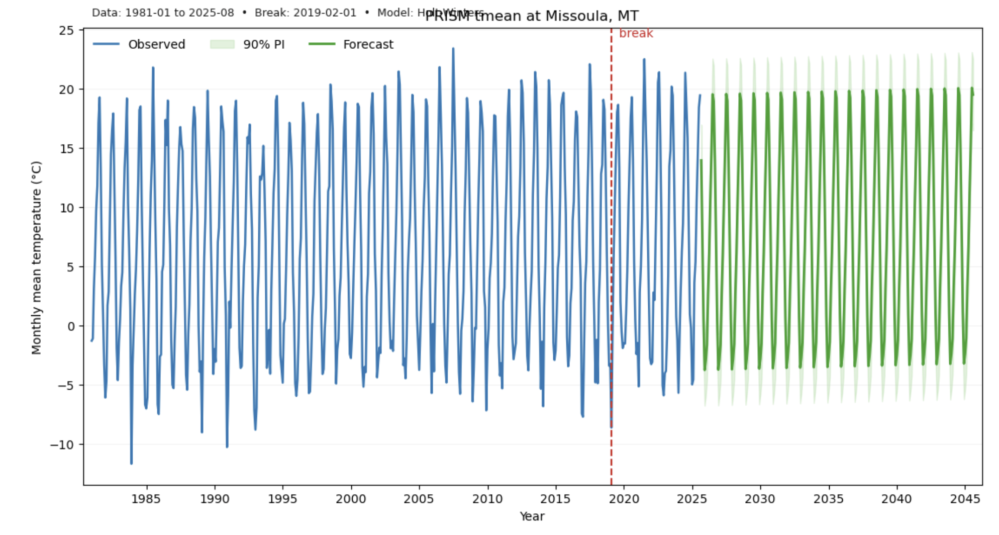

Finding Breaks and Forecasting Climate data using PRISM

Introduction
Climate systems are often assumed to change gradually, but in many cases they exhibit abrupt shifts or “tipping points” where the rate of change accelerates or decelerates. Detecting and forecasting such breaks in climate time series is important for understanding regional climate impacts, anticipating ecosystem stress, and informing adaptation planning. This workflow combines data streaming, change-point detection, and time-series forecasting to provide a reproducible way of investigating potential tipping points in observed climate records.
Data Source: PRISM Climate Data
We use the Parameter-elevation Regressions on Independent Slopes Model (PRISM) dataset, developed by the PRISM Climate Group at Oregon State University. PRISM provides high-resolution gridded climate data for the contiguous United States, widely used in climate research and resource management (Daly et al. 2008, Int. J. Climatology).
- Coverage: 1981 to present (monthly time series).
- Variables: Mean, maximum, minimum temperature, and precipitation.
- Resolution: Typically 4 km, with finer options.
By streaming PRISM directly via GDAL’s Virtual File System (VSI), we avoid large downloads and enable point extraction (lat/lon or place-based geocoding) on demand.
Why This Matters
- Tipping points in climate: Shifts in warming rates or precipitation regimes can signify new stress regimes (Steffen et al. 2018, PNAS).
- Decision support: Early detection of accelerations in warming or drought is critical for water resource planning, agriculture, and fire risk management.
- Accessible forecasting: Many users lack the statistical background to implement advanced models. This workflow packages established methods into an easy-to-use pipeline.
Step 1: Data Streaming
- We extract PRISM monthly mean temperature (tmean) for a given location.
- Using GDAL, the script directly opens compressed
.ziparchives over HTTP without manual downloads. - The code accounts for PRISM’s use of scale/offset factors in raster bands, ensuring values are converted to real degrees Celsius.
Step 2: Change-Point Detection
We ask: Has the climate trend changed significantly at some point?
- Statistical foundation: Structural break detection in regression models (Bai & Perron 2003, J. Econometrics).
- Algorithm: By default, we use the Pruned Exact Linear Time (PELT) method (Killick et al. 2012, JASA), implemented in the ruptures package (Truong et al. 2020, J. Statistical Software).
- Fallback method: A custom F-test on segmented regressions compares slopes before and after each candidate break.
Mathematics (simplified):
For time series (y_t), we test piecewise linear models:
[
y_t = \alpha_1 + \beta_1 t + \varepsilon_t, \quad t \le k \
y_t = \alpha_2 + \beta_2 t + \varepsilon_t, \quad t > k
]
We choose (k) that minimizes total residual error and test whether slopes differ significantly.
Step 3: Forecasting Models
Forecasting is done with several standard models, then validated via rolling backtests: - Holt–Winters Exponential Smoothing (Additive): captures trend + seasonality (Holt 1957; Winters 1960). - STL + ARIMA: Seasonal–Trend decomposition with ARIMA errors (Box & Jenkins 1970). - SARIMAX: Seasonal ARIMA with exogenous regressors, flexible for seasonal climate series. - Auto-ARIMA (pmdarima): Automated parameter selection (Hyndman & Khandakar 2008).
Forecast accuracy check: We use a rolling origin cross-validation (Tashman 2000, Int. J. Forecasting), where earlier subsets of data are used to predict withheld observations. The model with lowest RMSE (root mean square error) is chosen.
Prediction intervals: Forecasts include 90% intervals, reflecting uncertainty in future outcomes.
Step 4: Visualization
The final plot shows: - Observed data (blue line). - Detected break (red dashed line). - Forecast mean (green line). - Prediction interval (light green band).
This visualization helps both scientists and decision-makers quickly assess whether climate trends have shifted and what plausible futures look like.
Example Use Case
Suppose you want to know whether Boulder, Colorado has experienced an accelerated warming trend since 1981 and what might happen in the next 20 years:
1. Provide place="Boulder, CO" and a start year.
2. The workflow fetches PRISM monthly mean temperature.
3. It detects whether the slope changed (e.g., around 2000s).
4. It produces a 20-year forecast with confidence bands.
References (verified, with context)
-
PRISM data — Daly, C., Halbleib, M., Smith, J. I., et al. (2008). Physiographically sensitive mapping of temperature and precipitation across the conterminous United States. International Journal of Climatology, 28(15), 2031–2064. DOI / Wiley. Open PDF via PRISM group: link.
Context: foundational description of PRISM dataset, which underlies all data streamed here. -
Multiple structural breaks — Bai, J., & Perron, P. (2003). Computation and analysis of multiple structural change models. Journal of Applied Econometrics, 18(1), 1–22. Wiley abstract / JSTOR.
Context: provides statistical foundation for detecting and estimating breakpoints in regression models. -
PELT algorithm — Killick, R., Fearnhead, P., & Eckley, I. A. (2012). Optimal Detection of Changepoints with a Linear Computational Cost. Journal of the American Statistical Association, 107(500), 1590–1598. Publisher / preprint.
Context: efficient algorithm for change-point detection, used in the ruptures package. -
ruptures package — Truong, C., Oudre, L., & Vayatis, N. (2018/2020). ruptures: change point detection in Python. Journal of Statistical Software; also Selective review of offline change point detection methods, Signal Processing, 167, 107299. ruptures paper (arXiv) • review (Elsevier) • project docs.
Context: the actual Python package used here for breakpoint detection. -
Rolling-origin evaluation — Tashman, L. J. (2000). Out-of-sample tests of forecasting accuracy: an analysis and review. International Journal of Forecasting, 16(4), 437–450. ScienceDirect / RePEc.
Context: justifies rolling-origin cross-validation used here to compare forecast models. -
Exponential smoothing (origin) — Holt, C. C. (1957). Forecasting seasonals and trends by exponentially weighted moving averages. Office of Naval Research Report; reprinted International Journal of Forecasting (2004). IJF reprint abstract.
Context: origin of exponential smoothing, one of our candidate forecasting models. -
Holt–Winters seasonal method — Winters, P. R. (1960). Forecasting sales by exponentially weighted moving averages. Management Science, 6(3), 324–342. JSTOR.
Context: extends Holt’s method with seasonality, used here in Holt–Winters model. -
ARIMA framework — Box, G. E. P., & Jenkins, G. M. (1970). Time Series Analysis: Forecasting and Control. Holden‑Day. (See later editions at Wiley; first edition archived: Internet Archive).
Context: canonical reference for ARIMA/SARIMA models applied here. -
Auto-ARIMA — Hyndman, R. J., & Khandakar, Y. (2008). Automatic time series forecasting: the forecast package for R. Journal of Statistical Software, 27(3), 1–22. JSS / PDF.
Context: describes automated ARIMA search; foundation for pmdarima implementation in Python. -
Tipping points framing — Steffen, W., Rockström, J., Richardson, K., et al. (2018). Trajectories of the Earth System in the Anthropocene. Proceedings of the National Academy of Sciences, 115(33), 8252–8259. PNAS / PDF.
Context: frames the idea of global and regional climate tipping points, motivating the broader application of this workflow.
Code
Note: Runtime can be slow, especially for the first run at a new location. This is due to network fetches and model optimization. Patience pays off with a robust result!
# PRISM tipping-point forecast (VSI + scale/offset safe + month backoff)
# GDAL compatibility for InvGeoTransform return shape
from __future__ import annotations
import warnings, datetime as dt
from typing import Optional, Tuple, Dict, Union, List
import numpy as np
import pandas as pd
import matplotlib.pyplot as plt
from matplotlib.dates import YearLocator, DateFormatter
from statsmodels.tsa.holtwinters import ExponentialSmoothing
from statsmodels.tsa.statespace.sarimax import SARIMAX
from statsmodels.tsa.forecasting.stl import STLForecast
from statsmodels.tsa.arima.model import ARIMA
from osgeo import gdal
warnings.filterwarnings("ignore", category=UserWarning)
# ---------- GDAL helpers ----------
def _inv_geotransform(gt: Tuple[float, ...]) -> Optional[Tuple[float, ...]]:
"""
Return inverted geotransform as a 6-tuple, handling both GDAL APIs:
- old: returns (success_flag, inv_gt)
- new: returns inv_gt
"""
try:
out = gdal.InvGeoTransform(gt)
# new API: a 6-tuple
if isinstance(out, (list, tuple)) and len(out) == 6:
return tuple(out)
# old API: (success, inv_gt)
if isinstance(out, (list, tuple)) and len(out) == 2:
ok, inv = out
return tuple(inv) if ok and isinstance(inv, (list, tuple)) and len(inv) == 6 else None
except Exception:
return None
return None
# ---------- PRISM helpers (VSI) ----------
_RES_CODE = {"4km": "25m", "800m": "30s", "400m": "15s"} # filename tokens
def _as_datecode(date: Union[str, dt.date, dt.datetime], freq: str) -> Tuple[str, str]:
"""Return (datecode, yyyy) for PRISM naming given freq ('daily'|'monthly'|'annual')."""
if isinstance(date, (dt.datetime, dt.date)):
d = date if isinstance(date, dt.date) and not isinstance(date, dt.datetime) else date.date()
elif isinstance(date, str):
s = date.strip()
if freq == "daily":
try: d = dt.datetime.strptime(s, "%Y-%m-%d").date()
except ValueError: d = dt.datetime.strptime(s, "%Y%m%d").date()
elif freq == "monthly":
try: d = dt.datetime.strptime(s, "%Y-%m").date().replace(day=1)
except ValueError: d = dt.datetime.strptime(s, "%Y%m").date().replace(day=1)
elif freq == "annual":
d = dt.datetime.strptime(s, "%Y").date().replace(month=1, day=1)
else:
raise ValueError("freq must be one of: 'daily','monthly','annual'")
else:
raise TypeError("date must be str, datetime, or date")
if freq == "daily":
return d.strftime("%Y%m%d"), d.strftime("%Y")
elif freq == "monthly":
return d.strftime("%Y%m"), d.strftime("%Y")
else:
return d.strftime("%Y"), d.strftime("%Y")
def _build_prism_vsi(
variable: str,
date: Union[str, dt.date, dt.datetime],
resolution: str = "4km",
region: str = "us",
freq: str = "monthly",
network: str = "an",
) -> str:
if resolution not in _RES_CODE:
raise ValueError("resolution must be one of {'800m','4km','400m'}")
datecode, yyyy = _as_datecode(date, freq)
res_code = _RES_CODE[resolution]
base_dir = f"https://data.prism.oregonstate.edu/time_series/{region}/{network}/{resolution}/{variable}/{freq}/{yyyy}/"
zip_name = f"prism_{variable}_{region}_{res_code}_{datecode}.zip"
tif_name = f"prism_{variable}_{region}_{res_code}_{datecode}.tif"
return f"/vsizip//vsicurl/{base_dir}{zip_name}/{tif_name}"
def _gdal_open_vsi(vsi: str) -> gdal.Dataset | None:
# Make vsicurl streaming robust
gdal.SetConfigOption("GDAL_DISABLE_READDIR_ON_OPEN", "YES")
gdal.SetConfigOption("CPL_VSIL_CURL_ALLOWED_EXTENSIONS", ".zip,.tif,.tiff,.xml,.stx,.prj,.aux.xml")
gdal.SetConfigOption("GDAL_HTTP_MULTIRANGE", "YES")
gdal.SetConfigOption("CPL_VSIL_CURL_CHUNK_SIZE", "1048576") # 1 MB
return gdal.Open(vsi, gdal.GA_ReadOnly)
def _safe_default_end_month(end: Optional[str]) -> str:
"""Use previous full calendar month (YYYY-MM) if end is None."""
if end is not None:
return end
today = pd.Timestamp.today().normalize()
return (today.replace(day=1) - pd.offsets.MonthBegin(1)).strftime("%Y-%m")
def _read_point_scaled(ds: gdal.Dataset, lat: float, lon: float) -> Optional[float]:
"""Read one pixel at (lat,lon), applying scale/offset; return °C or None."""
gt = ds.GetGeoTransform()
inv_gt = _inv_geotransform(gt)
if inv_gt is None:
return None
px, py = gdal.ApplyGeoTransform(inv_gt, lon, lat)
pxi, pyi = int(round(px)), int(round(py))
if pxi < 0 or pyi < 0 or pxi >= ds.RasterXSize or pyi >= ds.RasterYSize:
return None
band = ds.GetRasterBand(1)
raw = float(band.ReadAsArray(pxi, pyi, 1, 1)[0, 0])
ndv = band.GetNoDataValue()
if ndv is not None and raw == ndv:
return None
scale = band.GetScale() if band.GetScale() is not None else 1.0
offset = band.GetOffset() if band.GetOffset() is not None else 0.0
val = raw * float(scale) + float(offset)
if not (-100.0 <= val <= 100.0): # sanity AFTER scaling
return None
return val
def _sample_prism_month(lat: float, lon: float, when: dt.date) -> Optional[float]:
"""
Return **scaled** tmean (°C) at (lat,lon) for the target month.
If that month's file isn't published yet, step back up to 6 months.
"""
for back in range(0, 7):
ts_try = (pd.Timestamp(when) - pd.offsets.MonthBegin(back)).to_period("M").to_timestamp().date()
vsi = _build_prism_vsi(variable="tmean", date=ts_try, resolution="4km", region="us", freq="monthly", network="an")
ds = _gdal_open_vsi(vsi)
if ds is None:
continue
try:
val = _read_point_scaled(ds, lat, lon)
if val is not None:
return val
finally:
ds = None
return None
def _stream_prism_monthly_tmean_vsi(lat: float, lon: float, start: Optional[str], end: Optional[str]) -> pd.Series:
if start is None:
start = "1981-01"
end = _safe_default_end_month(end)
idx = pd.period_range(start=start, end=end, freq="M").to_timestamp(how="start")
vals, dates = [], []
for ts in idx:
val = _sample_prism_month(lat, lon, ts.date().replace(day=1))
if val is not None:
vals.append(val); dates.append(ts)
if not dates:
raise RuntimeError("No PRISM monthly samples could be read for the requested location/range.")
s = pd.Series(vals, index=pd.to_datetime(dates)).sort_index().asfreq("MS")
s = s.interpolate(limit=1)
s.name = "tmean_c"
return s
# -------------------------
# Optional geocoding
# -------------------------
def _geocode_place(place: str) -> Tuple[float, float]:
try:
from geopy.geocoders import Nominatim
except Exception as e:
raise ImportError("geopy is required to geocode place names. Try: pip install geopy") from e
geolocator = Nominatim(user_agent="prism-forecast-geocoder")
loc = geolocator.geocode(place)
if not loc:
raise ValueError(f"Could not geocode place: {place}")
return float(loc.latitude), float(loc.longitude)
# -------------------------
# Change-point detection (one break)
# -------------------------
def _detect_breakpoint(y: pd.Series) -> Optional[pd.Timestamp]:
try:
import ruptures as rpt
arr = y.values.reshape(-1, 1)
algo = rpt.Pelt(model="rbf").fit(arr)
res = algo.predict(pen=8)
if len(res) <= 1:
return None
idx = res[0] - 1
if 3 <= idx <= len(y) - 4:
return y.index[idx]
return None
except Exception:
window = max(12, len(y)//12)
if window*2 >= len(y):
return None
x = np.arange(len(y))
def slope(a, b):
X = np.vstack([np.ones_like(a), a]).T
beta = np.linalg.lstsq(X, b, rcond=None)[0]
return beta[1]
best = None; best_jump = 0.0
for i in range(window, len(y)-window):
left = slope(x[i-window:i], y.values[i-window:i])
right = slope(x[i:i+window], y.values[i:i+window])
jump = abs(right - left)
if jump > best_jump and 6 < i < len(y)-6:
best = i; best_jump = jump
return y.index[best] if best is not None else None
# -------------------------
# Rolling-origin backtest
# -------------------------
def _rolling_rmse(y: pd.Series, model_fn, steps=12, min_train=120):
y = y.dropna()
errs = []
for end in range(min_train, len(y)-steps+1, steps):
train = y.iloc[:end]
test = y.iloc[end:end+steps]
try:
fc = model_fn(train, horizon=len(test))
fc = fc.reindex(test.index)
errs.append(((fc - test)**2).mean()**0.5)
except Exception:
continue
return float(np.nanmean(errs)) if errs else np.inf
# -------------------------
# Candidate model wrappers
# -------------------------
def _fit_predict_es(train: pd.Series, horizon: int, return_pi=False):
mod = ExponentialSmoothing(train, trend="add", seasonal="add", seasonal_periods=12)
res = mod.fit(optimized=True, use_brute=True)
fc = res.forecast(horizon)
if return_pi:
resid = train - res.fittedvalues
std = float(np.nanstd(resid)); z = 1.64
lo = fc - z*std; hi = fc + z*std
return fc, lo, hi, {"name": "Holt-Winters (add-add)", "aic": np.nan}
return fc
def _fit_predict_stl_arima(train: pd.Series, horizon: int, return_pi=False):
stlf = STLForecast(endog=train, model=ARIMA, model_kwargs={"order": (1,1,1)}, period=12, robust=True)
res = stlf.fit()
fc = res.forecast(horizon)
if return_pi:
resid = (train - res.fittedvalues).dropna()
std = float(np.nanstd(resid)); z = 1.64
lo = fc - z*std; hi = fc + z*std
return fc, lo, hi, {"name": "STL + ARIMA(1,1,1)", "aic": np.nan}
return fc
def _fit_predict_sarimax(train: pd.Series, horizon: int, return_pi=False):
best_res = None; best = (np.inf, None, None)
orders = [(1,1,0), (1,1,1), (2,1,1)]
sorders = [(0,1,1,12), (1,1,1,12)]
for order in orders:
for sorder in sorders:
try:
mod = SARIMAX(train, order=order, seasonal_order=sorder, enforce_stationarity=False, enforce_invertibility=False)
res = mod.fit(disp=False)
if res.aic < best[0]:
best = (res.aic, order, sorder); best_res = res
except Exception:
continue
if best_res is None:
mod = SARIMAX(train, order=(1,1,1), seasonal_order=(0,1,1,12), enforce_stationarity=False, enforce_invertibility=False)
best_res = mod.fit(disp=False); label = "SARIMAX fallback"
else:
aic, order, sorder = best; label = f"SARIMAX {order} x {sorder}"
fc_res = best_res.get_forecast(steps=horizon)
fc = fc_res.predicted_mean
if return_pi:
conf = fc_res.conf_int(alpha=0.10)
lo = conf.iloc[:,0]; hi = conf.iloc[:,1]
return fc, lo, hi, {"name": label, "aic": float(best_res.aic)}
return fc
def _fit_predict_pmdarima(train: pd.Series, horizon: int, return_pi=False):
try:
import pmdarima as pm
except Exception:
if return_pi:
raise
return _fit_predict_sarimax(train, horizon, return_pi=return_pi)
model = pm.auto_arima(
train, seasonal=True, m=12, information_criterion="aic", stepwise=True,
suppress_warnings=True, error_action="ignore", max_p=3, max_q=3, max_P=2, max_Q=2, d=None, D=None
)
fc_idx = pd.date_range(train.index[-1] + pd.offsets.MonthBegin(1), periods=horizon, freq="MS")
fc = pd.Series(model.predict(n_periods=horizon), index=fc_idx)
if return_pi:
vals, conf = model.predict(n_periods=horizon, return_conf_int=True, alpha=0.10)
lo = pd.Series(conf[:,0], index=fc_idx); hi = pd.Series(conf[:,1], index=fc_idx)
return fc, lo, hi, {"name": "auto_arima (pmdarima)", "aic": float(model.aic())}
return fc
# -------------------------
# Main function
# -------------------------
def plot_prism_tipping_point_forecast(
place: Optional[str] = None,
lat: Optional[float] = None,
lon: Optional[float] = None,
start: Optional[str] = "1981-01",
end: Optional[str] = None,
max_forecast_years: int = 20,
figsize: Tuple[int, int] = (11, 6),
detect_break: bool = True,
prefer_pmdarima: bool = True,
seed: int = 1337,
) -> Tuple[plt.Figure, Dict, pd.Series]:
"""Stream PRISM monthly tmean (°C) via GDAL VSI, detect break, and forecast. Returns (fig, model_info, series)."""
np.random.seed(seed)
if place is None and (lat is None or lon is None):
raise ValueError("Provide either a place name OR both lat and lon.")
if place is not None and (lat is None or lon is None):
lat, lon = _geocode_place(place)
y = _stream_prism_monthly_tmean_vsi(lat, lon, start, end)
if len(y) < 60:
raise ValueError("Need at least ~5 years of monthly data for stable forecasting.")
bp_ts = _detect_breakpoint(y) if detect_break else None
def es_fn(train, horizon): return _fit_predict_es(train, horizon)
def stl_fn(train, horizon): return _fit_predict_stl_arima(train, horizon)
def sarimax_fn(train, horizon): return _fit_predict_sarimax(train, horizon)
cands = [("Holt-Winters", es_fn), ("STL+ARIMA", stl_fn), ("SARIMAX", sarimax_fn)]
if prefer_pmdarima:
try:
def pmd_fn(train, horizon): return _fit_predict_pmdarima(train, horizon)
cands.insert(0, ("auto_arima", pmd_fn))
except Exception:
pass
scores = []
for name, fn in cands:
rmse = _rolling_rmse(y, fn, steps=12, min_train=min(120, max(72, len(y)//2)))
scores.append((rmse, name, fn))
scores.sort(key=lambda x: x[0])
best_rmse, best_name, best_fn = scores[0]
horizon = int(max_forecast_years * 12)
if best_name == "Holt-Winters":
fc, lo, hi, info = _fit_predict_es(y, horizon, return_pi=True)
elif best_name == "STL+ARIMA":
fc, lo, hi, info = _fit_predict_stl_arima(y, horizon, return_pi=True)
elif best_name == "SARIMAX":
fc, lo, hi, info = _fit_predict_sarimax(y, horizon, return_pi=True)
else:
try:
fc, lo, hi, info = _fit_predict_pmdarima(y, horizon, return_pi=True)
except Exception:
fc, lo, hi, info = _fit_predict_sarimax(y, horizon, return_pi=True)
best_name = "SARIMAX (fallback)"
model_info = {"winner": best_name, "rmse_validation": best_rmse}
model_info.update(info)
# Plotting
C_OBS = "#1f77b4"; C_BREAK = "#d62728"; C_FC = "#2ca02c"; C_PI = "#a6dba0"
fig, ax = plt.subplots(figsize=figsize, constrained_layout=True)
ax.plot(y.index, y.values, color=C_OBS, lw=1.8, label="Observed")
if bp_ts is not None and bp_ts in y.index:
ax.axvline(bp_ts, color=C_BREAK, lw=1.5, ls="--")
ax.text(bp_ts, ax.get_ylim()[1], " break", color=C_BREAK, va="top", ha="left")
ax.fill_between(fc.index, lo.values, hi.values, color=C_PI, alpha=0.35, label="90% PI")
ax.plot(fc.index, fc.values, color=C_FC, lw=2.0, label="Forecast")
ax.set_ylabel("Monthly mean temperature (°C)")
ax.set_xlabel("Year")
ax.xaxis.set_major_locator(YearLocator(base=5))
ax.xaxis.set_major_formatter(DateFormatter("%Y"))
ax.grid(True, axis="y", alpha=0.15)
title_loc = place if place is not None else f"{lat:.4f}, {lon:.4f}"
start_str = y.index.min().strftime("%Y-%m"); end_str = y.index.max().strftime("%Y-%m")
ax.set_title(f"PRISM tmean at {title_loc}")
subtitle = f"Data: {start_str} to {end_str} • Break: {bp_ts.date() if bp_ts is not None else 'none'} • Model: {model_info['winner']}"
ax.text(0.01, 1.02, subtitle, transform=ax.transAxes, ha="left", va="bottom", fontsize=9, alpha=0.9)
ax.legend(frameon=False, ncol=3, loc="upper left")
ax.margins(x=0.01)
plt.show(fig)
return fig, model_info, y
# Example:
fig, info, series = plot_prism_tipping_point_forecast(place="Boulder, CO", start="1981-01", max_forecast_years=20)
# PRISM tipping-point forecast in R (VSI + month backoff + scale/offset safe)
# ---------------------------------------------------------------------------
# Suggested mamba installs (terminal):
# mamba install -c conda-forge r-terra r-ggplot2 r-lubridate r-dplyr r-tidyr r-forecast r-scales
# Optional:
# mamba install -c conda-forge r-strucchange # breakpoints (preferred)
# mamba install -c conda-forge r-changepoint # alternative break detector
# mamba install -c conda-forge r-tidygeocoder # place="City, ST" support
suppressPackageStartupMessages({
library(terra)
library(ggplot2)
library(lubridate)
library(dplyr)
library(tidyr)
library(forecast)
library(scales)
})
# ---------- PRISM helpers (VSI) ----------
.res_code <- c("4km"="25m","800m"="30s","400m"="15s")
.as_datecode <- function(date, freq=c("monthly","daily","annual")){
freq <- match.arg(freq)
if (inherits(date, c("Date","POSIXt"))) {
d <- as.Date(date)
} else if (is.character(date)) {
s <- trimws(date)
if (freq=="daily"){
if (grepl("^\\d{4}-\\d{2}-\\d{2}$", s)) d <- as.Date(s)
else d <- as.Date(s, format="%Y%m%d")
} else if (freq=="monthly"){
if (grepl("^\\d{4}-\\d{2}$", s)) d <- as.Date(paste0(s,"-01"))
else d <- as.Date(paste0(s,"01"), format="%Y%m%d")
} else {
d <- as.Date(paste0(s,"-01-01"))
}
} else stop("date must be character or Date/POSIXt")
if (freq=="daily") list(datecode=format(d,"%Y%m%d"), yyyy=format(d,"%Y"))
else if (freq=="monthly") list(datecode=format(d,"%Y%m"), yyyy=format(d,"%Y"))
else list(datecode=format(d,"%Y"), yyyy=format(d,"%Y"))
}
build_prism_vsi <- function(variable="tmean",
date="2025-06",
resolution="4km",
region="us",
freq="monthly",
network="an"){
if (!resolution %in% names(.res_code)) stop("resolution must be one of {'800m','4km','400m'}")
dc <- .as_datecode(date, freq=freq)
res_token <- unname(.res_code[[resolution]])
base_dir <- sprintf("https://data.prism.oregonstate.edu/time_series/%s/%s/%s/%s/%s/%s/",
region, network, resolution, variable, freq, dc$yyyy)
zip_name <- sprintf("prism_%s_%s_%s_%s.zip", variable, region, res_token, dc$datecode)
tif_name <- sprintf("prism_%s_%s_%s_%s.tif", variable, region, res_token, dc$datecode)
sprintf("/vsizip//vsicurl/%s%s/%s", base_dir, zip_name, tif_name)
}
safe_default_end_month <- function(end=NULL){
if (!is.null(end)) return(end)
today <- floor_date(Sys.Date(), "month")
format(today - months(1), "%Y-%m")
}
# Scale/offset helper:
apply_scale_sanity <- function(x){
if (all(is.na(x))) return(NA_real_)
v <- as.numeric(x)[1]
if (is.na(v)) return(NA_real_)
# If values look like degC*10, normalize
if (abs(v) > 120) v <- v / 10.0
# sanity bound
if (v < -100 || v > 100) return(NA_real_)
v
}
sample_prism_month <- function(lat, lon, when, max_back=6L){
# Try target month, then step back up to max_back months
for (b in 0:max_back){
ts_try <- as.Date(floor_date(as.Date(when), "month") - months(b))
vsi <- build_prism_vsi(variable="tmean", date=ts_try, resolution="4km",
region="us", freq="monthly", network="an")
r <- tryCatch(terra::rast(vsi), error=function(e) NULL)
if (is.null(r)) next
val <- tryCatch({
extract(r, matrix(c(lon, lat), ncol=2))[,2, drop=TRUE]
}, error=function(e) NA_real_)
val <- apply_scale_sanity(val)
if (!is.na(val)) return(val)
}
return(NA_real_)
}
fill_single_gaps <- function(x){
# Only fill isolated NA flanked by numbers; leave longer runs as NA
if (length(x) < 3) return(x)
y <- x
for (i in 2:(length(x)-1)){
if (is.na(x[i]) && !is.na(x[i-1]) && !is.na(x[i+1])){
y[i] <- 0.5*(x[i-1]+x[i+1])
}
}
y
}
stream_prism_monthly_tmean <- function(lat, lon, start="1981-01", end=NULL){
end <- safe_default_end_month(end)
idx <- seq(from=as.Date(paste0(start,"-01")),
to=as.Date(paste0(end,"-01")),
by="1 month")
vals <- vapply(idx, function(d) sample_prism_month(lat, lon, d), numeric(1))
keep <- !is.na(vals)
if (!any(keep)) stop("No PRISM monthly samples could be read for the requested location/range.")
df <- tibble::tibble(date=idx, tmean_c=vals)
df$tmean_c <- fill_single_gaps(df$tmean_c)
df %>% filter(!is.na(tmean_c)) %>% arrange(date)
}
# ---------- Optional geocoding ----------
# If tidygeocoder is installed, use it; else try a tiny built-in lookup; else stop.
.geocode_builtin <- tibble::tibble(
place = c("Boulder, CO","Denver, CO","Phoenix, AZ","Seattle, WA","New York, NY","Los Angeles, CA"),
lat = c(40.0150, 39.7392, 33.4484, 47.6062, 40.7128, 34.0522),
lon = c(-105.2705,-104.9903,-112.0740,-122.3321,-74.0060,-118.2437)
)
geocode_place <- function(place){
if (requireNamespace("tidygeocoder", quietly=TRUE)){
res <- tidygeocoder::geocode(address=place, method="osm", quiet=TRUE)
if (nrow(res)>0 && !is.na(res$lat[1]) && !is.na(res$long[1])) {
return(c(lat=res$lat[1], lon=res$long[1]))
}
}
hit <- .geocode_builtin %>% filter(tolower(place)==tolower(.data$place))
if (nrow(hit)==1) return(c(lat=hit$lat, lon=hit$lon))
stop("Geocoding failed; install 'tidygeocoder' (or add to built-in lookup) or pass lat/lon.")
}
# ---------- Change-point detection (one break) ----------
# Strategy: try strucchange -> changepoint -> OLS fallback
detect_breakpoint <- function(df_monthly){
y <- df_monthly$tmean_c
t <- seq_along(y)
# 1) strucchange (slope break in linear trend)
if (requireNamespace("strucchange", quietly=TRUE)){
dat <- data.frame(y=y, t=t)
bp <- tryCatch(strucchange::breakpoints(y ~ t, data=dat, h=max(12, floor(length(y)/12))),
error=function(e) NULL)
k <- if (!is.null(bp) && length(bp$breakpoints)>0) bp$breakpoints[1] else NA_integer_
if (!is.na(k) && k >= 6 && k <= (length(y)-6)) return(df_monthly$date[k])
}
# 2) changepoint (mean/var break)
if (requireNamespace("changepoint", quietly=TRUE)){
cp <- tryCatch(changepoint::cpt.meanvar(y, method="PELT", penalty="SIC"),
error=function(e) NULL)
k <- if (!is.null(cp) && length(changepoint::cpts(cp))>0) changepoint::cpts(cp)[1] else NA_integer_
if (!is.na(k) && k >= 6 && k <= (length(y)-6)) return(df_monthly$date[k])
}
# 3) OLS segmented fallback: pick k minimizing RSS with two lines
ols_line <- function(x, y){
X <- cbind(1, x)
coef <- tryCatch(solve(t(X)%*%X, t(X)%*%y), error=function(e) c(NA,NA))
yhat <- as.vector(X%*%coef)
rss <- sum((y-yhat)^2)
list(a=coef[1], b=coef[2], rss=rss)
}
n <- length(y)
window <- max(12, floor(n/12))
best_k <- NA; best_rss <- Inf
for (k in seq(window, n-window)){
left <- ols_line(t[1:k], y[1:k])$rss
right <- ols_line(t[(k+1):n], y[(k+1):n])$rss
tot <- left + right
if (!is.na(tot) && tot < best_rss){ best_rss <- tot; best_k <- k }
}
if (is.na(best_k) || best_k < 6 || best_k > (n-6)) return(NULL)
df_monthly$date[best_k]
}
# ---------- Rolling-origin backtest ----------
rolling_rmse <- function(ts_y, fit_fn, steps=12, min_train=120){
n <- length(ts_y)
errs <- c()
for (end in seq(min_train, n-steps, by=steps)){
train <- ts_y[1:end]
test <- ts_y[(end+1):(end+steps)]
fc <- tryCatch(fit_fn(train, horizon=length(test)), error=function(e) rep(NA_real_, length(test)))
if (length(fc) == length(test) && all(!is.na(fc))) {
errs <- c(errs, sqrt(mean((fc - test)^2)))
}
}
if (length(errs)==0) Inf else mean(errs)
}
# ---------- Candidate model wrappers ----------
fit_predict_ets <- function(train, horizon, return_pi=FALSE){
m <- forecast::ets(train, model="AAA")
fc <- forecast::forecast(m, h=horizon, level=90)
if (return_pi) list(mean=as.numeric(fc$mean), lo=as.numeric(fc$lower[,1]), hi=as.numeric(fc$upper[,1]),
label="ETS(A,A,A)", aic=AIC(m))
else as.numeric(fc$mean)
}
fit_predict_stl_arima <- function(train, horizon, return_pi=FALSE){
m <- forecast::stlm(train, method="arima")
fc <- forecast::forecast(m, h=horizon, level=90)
if (return_pi) list(mean=as.numeric(fc$mean), lo=as.numeric(fc$lower[,1]), hi=as.numeric(fc$upper[,1]),
label="STL + ARIMA", aic=NA_real_)
else as.numeric(fc$mean)
}
fit_predict_auto_arima <- function(train, horizon, return_pi=FALSE){
m <- forecast::auto.arima(train, seasonal=TRUE, stepwise=TRUE, approximation=FALSE)
fc <- forecast::forecast(m, h=horizon, level=90)
if (return_pi) list(mean=as.numeric(fc$mean), lo=as.numeric(fc$lower[,1]), hi=as.numeric(fc$upper[,1]),
label=sprintf("auto.arima %s", paste(forecast::arimaorder(m), collapse=",")),
aic=AIC(m))
else as.numeric(fc$mean)
}
# ---------- Main function ----------
plot_prism_tipping_point_forecast <- function(place=NULL,
lat=NULL, lon=NULL,
start="1981-01",
end=NULL,
max_forecast_years=20,
detect_break=TRUE,
seed=1337){
set.seed(seed)
if (is.null(place) && (is.null(lat) || is.null(lon)))
stop("Provide either a place name OR both lat and lon.")
if (!is.null(place) && (is.null(lat) || is.null(lon))){
coords <- tryCatch(geocode_place(place), error=function(e) NULL)
if (is.null(coords)) stop("Geocoding failed; install 'tidygeocoder' (or add to built-in lookup) or pass lat/lon.")
lat <- coords["lat"]; lon <- coords["lon"]
}
df <- stream_prism_monthly_tmean(lat, lon, start=start, end=end)
if (nrow(df) < 60) stop("Need at least ~5 years of monthly data for stable forecasting.")
# Break detection
bp_date <- if (detect_break) detect_breakpoint(df) else NULL
# Monthly ts (freq=12)
y_ts <- ts(df$tmean_c, start=c(year(min(df$date)), month(min(df$date))), frequency=12)
# Candidates
fitA <- function(z, horizon) fit_predict_auto_arima(z, horizon)
fitB <- function(z, horizon) fit_predict_stl_arima(z, horizon)
fitC <- function(z, horizon) fit_predict_ets(z, horizon)
base_min_train <- min(120, max(72, floor(length(y_ts)/2)))
rmseA <- rolling_rmse(y_ts, fitA, steps=12, min_train=base_min_train)
rmseB <- rolling_rmse(y_ts, fitB, steps=12, min_train=base_min_train)
rmseC <- rolling_rmse(y_ts, fitC, steps=12, min_train=base_min_train)
scores <- tibble::tibble(model=c("auto.arima","STL+ARIMA","ETS"),
rmse=c(rmseA, rmseB, rmseC))
winner <- scores$model[which.min(scores$rmse)]
horizon <- max_forecast_years * 12
if (winner=="ETS"){
res <- fit_predict_ets(y_ts, horizon, return_pi=TRUE)
} else if (winner=="STL+ARIMA"){
res <- fit_predict_stl_arima(y_ts, horizon, return_pi=TRUE)
} else {
res <- fit_predict_auto_arima(y_ts, horizon, return_pi=TRUE)
}
# Build forecast df with dates
last_month <- max(df$date)
fidx <- seq(from=last_month %m+% months(1), by="1 month", length.out=horizon)
fc_df <- tibble::tibble(date=fidx, mean=res$mean, lo=res$lo, hi=res$hi)
# Plot
C_OBS <- "#1f77b4"; C_BREAK <- "#d62728"; C_FC <- "#2ca02c"; C_PI <- "#a6dba0"
p <- ggplot() +
geom_line(data=df, aes(date, tmean_c), color=C_OBS, linewidth=0.7) +
{ if (!is.null(bp_date)) geom_vline(xintercept=as.numeric(bp_date), color=C_BREAK, linetype="dashed") } +
geom_ribbon(data=fc_df, aes(date, ymin=lo, ymax=hi), fill=C_PI, alpha=0.35) +
geom_line(data=fc_df, aes(date, mean), color=C_FC, linewidth=0.8) +
scale_x_date(date_breaks = "5 years", date_labels = "%Y", expand=expansion(mult=c(0.01,0.02))) +
labs(x="Year", y="Monthly mean temperature (°C)",
title = sprintf("PRISM tmean at %s",
if (!is.null(place)) place else sprintf("%.4f, %.4f", lat, lon)),
subtitle = sprintf("Data: %s to %s • Break: %s • Model: %s • RMSE (val): %s",
format(min(df$date), "%Y-%m"),
format(max(df$date), "%Y-%m"),
if (!is.null(bp_date)) format(bp_date, "%Y-%m") else "none",
winner, scales::comma(min(scores$rmse)))) +
theme_minimal(base_size = 11) +
theme(panel.grid.minor = element_blank())
print(p)
list(plot=p,
model_info=list(winner=winner, rmse_validation=min(scores$rmse), label=winner),
series=df)
}
# ----------------------------
# Examples:
# ----------------------------
# 1) With coordinates (no extra installs):
out <- plot_prism_tipping_point_forecast(
lat = 40.015, lon = -105.2705, # Boulder, CO
start = "1981-01",
max_forecast_years = 20
)
# 2) With place name (install tidygeocoder first, or rely on built-in few-city lookup):
# out <- plot_prism_tipping_point_forecast(
# place = "Boulder, CO",
# start = "1981-01",
# max_forecast_years = 20
# )